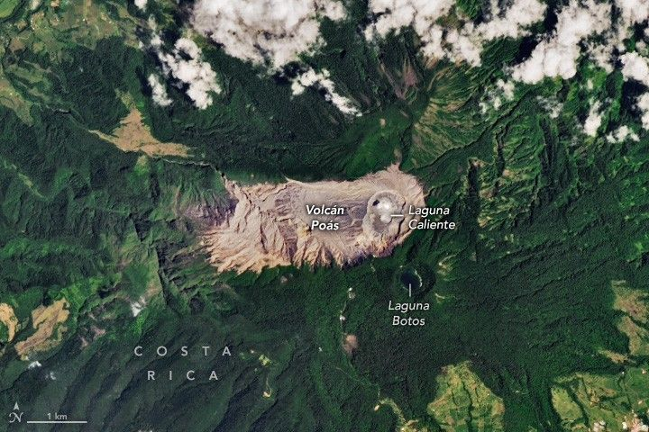

Roiling Poás Volcano
Volcán Poás (Poás volcano), one of the most active in Costa Rica, looms over the country’s capital and largest city, San José. During quiet periods, people ascend its slopes and peer into its summit crater, where a hot, sulfurous, and acidic lake seethes. The restless stratovolcano has erupted dozens of times in the past 200 years, propelling plumes of ash and volcanic gases that sometimes carry into nearby communities.
Poás was rumbling to life again in early March 2025, when the OLI (Operational Land Imager) on Landsat 8 acquired the images above and below. The Volcanological and Seismological Observatory of Costa Rica (OVSICORI-UNA) reported frequent steam-driven, or phreatic, eruptions in its crater from March 4 to March 7. Other data suggested an increased probability of impending dangerous eruptions, prompting authorities to issue the third-highest volcanic alert level (out of four).
Periodic eruptions continued at Poás from early March through at least mid May, though persistent cloudiness prevented Landsat sensors from capturing a clear image of the activity. OVSICORI-UNA observed plumes of steam, volcanic gases, and sometimes ash shooting more than a kilometer into the air throughout this eruptive period. High levels of sulfur dioxide degraded air quality in cities and towns nearby, and ashfall damaged some coffee crops and pastures, according to news reports. The observatory also noted a red glow in the crater in early May, which they attributed to the combustion of sulfur deposits.
A satellite image shows the Costa Rican capital of San José and surrounding developed areas, which appear pink or tan and occupy the bottom portion of the image, and light and dark green mountainous areas across the top of the image. Volcán Poás (Poás volcano) is at the top of the frame near the center, identifiable as a mountain-top free of vegetation.
The active crater at Poás’ summit contains the geothermally heated Laguna Caliente. In addition to its warmth, the lake’s water is extremely acidic, with pH values hovering around zero, and contains high levels of heavy metals. The lake’s level was low at the time of the image; it can vary based on climatic factors and interactions with the magma beneath. Notice how an area around the active crater is devoid of vegetation due to acidic gas emissions. Another, older crater is visible to the south, where the freshwater Laguna Botos occupies a cone that last erupted about 7,500 years ago.
As inhospitable as Poás’ crater may seem, it does support life. Scientists have discovered the microbial community is dominated by Acidiphilium—acid-loving bacteria—in samples of water, sediment, and sulfur deposits from Laguna Caliente. They found that these microbes’ genomes encode multiple adaptations for survival, including resistance to acid and heat, and mechanisms to cope with heavy metal toxicity. In addition, the lake is typically low in organic carbon but can receive pulses of nutrients after rainfall events. Acidiphilium can switch from fixing carbon from the atmosphere to consuming simple sugars when conditions allow.
This photograph was taken from the rim of the summit crater of Poás volcano. A small, light-teal lake fills in part of the crater floor, and the white billows of a gas plume rise from it.
Researchers are interested in Poás’ environment and how it harbors life because similar volcanic environments likely existed on Mars. Volcanic activity has occurred on the planet for much of its history—possibly much longer than surface water was present. What’s more, Mars orbiters and landers have produced evidence for relict hydrothermal systems across the planet with similar chemistry to the Poás crater. For example, the Mars Exploration Rover Spirit discovered what is believed to have been an acidic hydrothermal environment at a site called Home Plate.
Although scientists continue to learn more about Mars’ volcanic history, features formed by flowing water have received more attention in the past. “When we look at lacustrine or deltaic systems from orbital imagery from Mars, we immediately draw parallels to similar environments on Earth,” said Rachel Harris, a NASA Postdoctoral Management Program Fellow in the Astrobiology Program studying the microbiology of extremophiles.
But those parallels could be misleading. On Earth, river deltas tend to be rich in organic carbon because they accumulate material from ecosystems fueled by photosynthesis. However, the form of photosynthesis that dominates Earth’s surface today—one that produces oxygen and can sustain complex food webs—didn’t evolve until around 2.4 to 2.7 billion years ago, noted Harris. In contrast, Mars likely lost its stable surface habitability much earlier, during a major climate transition. There may not have been enough time for this complex process to develop as we know it on Mars, she said.
Harris and other experts argue that volcanic environments may have been good candidates for sustaining life on Mars due to their extent and longevity on the Red Planet. Past research suggests that early life on Earth survived in hydrothermal settings and utilized iron and sulfur. Scientists find it conceivable that life on Mars could have arisen in a similar way in volcanically heated environments—perhaps analogous to the one found atop Poás.
“We have a very human-centric bias for what a nice, happy, temperate environment is to grow in,” said Harris. The Poás system may be hostile to most forms of life we are familiar with. But for a microbe adapted to acid, heat, and toxic metals, it’s paradise.